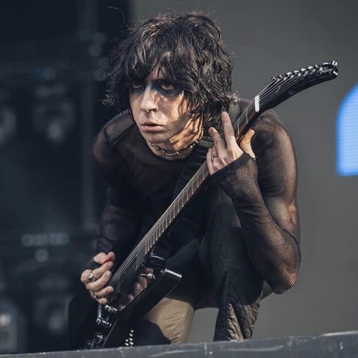

Yağmur Sarıgül, 17 Mart 1980 tarihinde Ankara'da doğdu. Genç yaşlarda müziğe olan ilgisi belirginleşti ve gitar çalmaya başladı. İlk müzik eğitimini ailesinden aldı ve ardından çeşitli müzik okullarında eğitimini sürdürdü. Gitar tekniği ve müzikal yeteneği, onu genç yaşta dikkat çekici bir müzisyen yaptı.
Yağmur Sarıgül, 2001 yılında Ferman Akgül, Cem Bahtiyar ve Özgür Can Öney ile birlikte Manga isimli rock grubunu kurdu. Grubun kurucularından biri olarak, Manga'nın müzik kariyerinin şekillenmesinde önemli bir rol oynadı. Gitarist olarak grupta "Yamyam" lakabıyla tanındı ve enerjik sahne performanslarıyla büyük beğeni topladı.
Manga, 2004 yılında yayımladıkları ilk albüm "Maşallah" ile büyük bir çıkış yakaladı. Albümdeki başarılı gitar riffleri ve sololar, Yağmur Sarıgül'ün yeteneğini ön plana çıkardı. 2006'da yayımlanan ikinci albüm "Şehr-i Hüzün" ile grup, uluslararası alanda tanınmaya başladı ve Eurovision Şarkı Yarışması'nda Türkiye'yi temsil etti. Sarıgül'ün gitar katkıları, grubun müzikal başarısında önemli bir rol oynadı.
2009 yılında yayımlanan "e-akustik" albümünde, Sarıgül'ün akustik gitar çalışmaları öne çıktı. Albüm, hem eski hem de yeni parçaların akustik versiyonlarını içeriyordu ve Sarıgül'ün teknik becerilerini farklı bir şekilde sergileme fırsatı sundu. 2010 yılında çıkan "Işıkları Söndürseler Bile" albümünde de Sarıgül'ün enerjik gitar performansları, grubun başarısına katkıda bulundu.
Yağmur Sarıgül, hem canlı performanslarda hem de stüdyo çalışmalarında dikkat çeken bir gitarist olarak tanınır. Müzikal kariyerinin yanı sıra, genç müzisyenlere mentorluk yaparak ve çeşitli müzik projelerine katkıda bulunarak müzik dünyasına olan katkılarını sürdürmektedir. Gitar tekniği ve sahne duruşuyla, rock müziğin önemli isimlerinden biri olarak kabul edilir.
